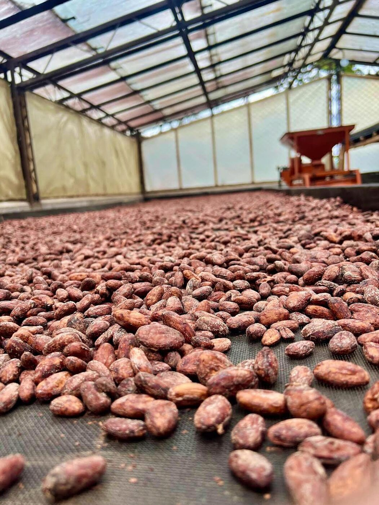
Het verschil tussen ceremoniële cacao en chocolade
Waarom is ceremoniële cacao zo anders dan de reep uit de supermarkt? Over bereiding, oorsprong en intentie.
Lees verderPure, biologische cacao uit het hart van Peru en Colombia — geoogst met aandacht, gedeeld met liefde.
Ontdek de collectie€11,95 — 125g · €21,95 — 250g
€33 — 200g · €60 — 400g
Deze biologische Criollo Cacao wordt geoogst in Satipo, in het centrale deel van Peru, gelegen in het departement Junín. De Cacao wordt met zorg verbouwd door geassocieerde Asháninka-producenten uit het gebied rondom de rivier de Ene, die de hoge kwaliteit en pure oorsprong van deze Cacao waarborgen.
Criollo Cacao staat bekend als een van de meest verfijnde en gewaardeerde cacaovariëteiten, geliefd om haar zachte smaak, rijke aroma's en diepe culturele betekenis.
Naast haar bijzondere smaakbeleving biedt ceremoniële Cacao ook diverse natuurlijke voordelen. Cacao is rijk aan magnesium, ijzer en andere voedende stoffen die bijdragen aan het algemene welzijn. Naast de gezondheidsvoordelen werkt ze ook nog sterk op emotioneel en energetisch niveau. Velen ervaren haar zachte, openende kracht wanneer zij Cacao met aandacht tot zich nemen. Ze werkt graag met je samen om je hart te openen en emoties makkelijker te laten stromen.
Deze Cacao wordt gemaakt door eerst de bonen te roosteren, en vervolgens de cacaonibs zorgvuldig te malen tot een pure, volle pasta. Vervolgens wordt de Cacao getemperd en in vormen gegoten, waardoor een rijke en authentieke Cacao ontstaat die geschikt is voor zowel ceremonies als dagelijks gebruik.
Zie de achterkant van het zakje voor gebruiksinstructies.
Bestellen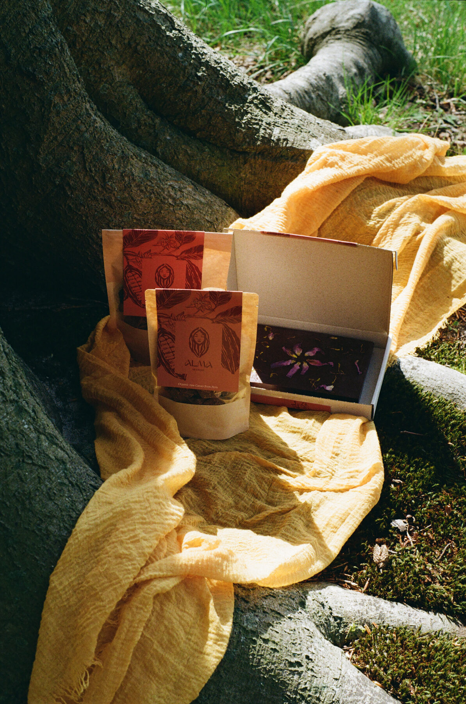
Deze blend met Blauwe Lotus is een bijzondere combinatie van planten en energieën. Blauwe Lotus staat bekend om haar rustgevende en intuïtieve werking, terwijl Cacao helpt om het hart te openen, verbinding te verdiepen en meer aanwezigheid in het moment te brengen. Samen vormen ze een warme, aardende combinatie die uitnodigt tot ontspanning, creativiteit en verbinding.
Elke blend wordt met aandacht, zorg en liefde samengesteld om een zo puur en compleet mogelijk product te creëren. In ieder kopje verwerken we een zelfgemaakt Blauwe Lotus glycerine-extract, gecombineerd met biologische ceremoniële Cacao van Colombia of Peru en een harmonieuze mix van specerijen zoals kardemom, kaneel, vanille en een vleugje cayenne. De kruiden zijn zorgvuldig afgestemd om de diepe, zachte smaak van de cacao te versterken en een verwarmende ervaring te bieden.
Perfect voor rituelen, meditatie, creatieve momenten of een bewust rustpunt gedurende de dag of avond.
Bestellen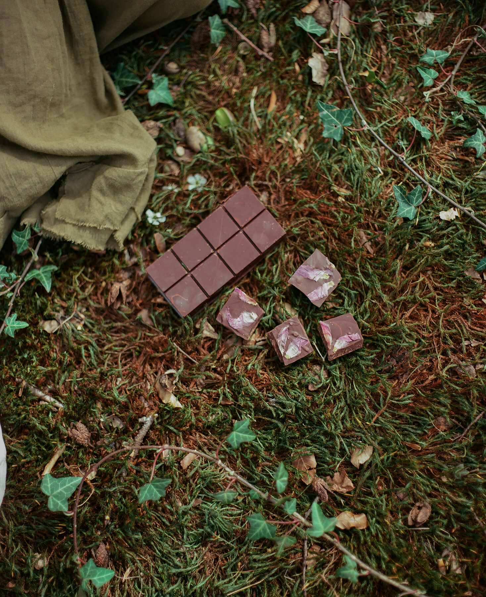
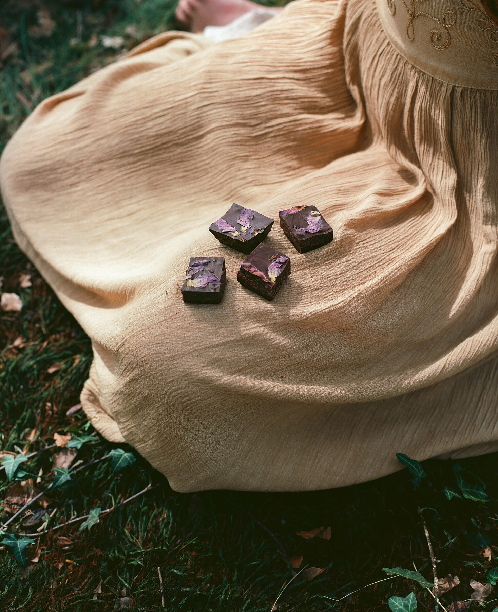
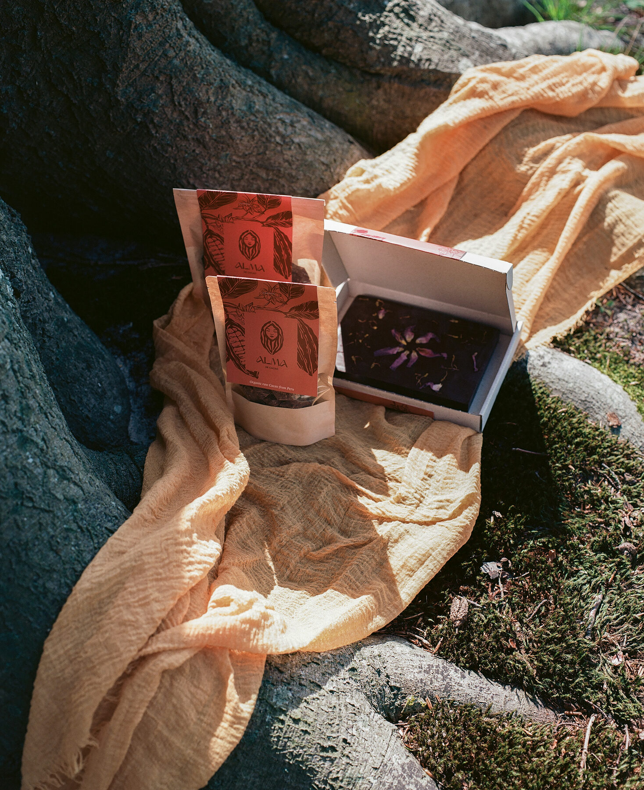
Zelfgemaakte plantextracten op basis van voedingsgrade glycerine — niet-alcoholisch. Heerlijk om aan je cacao toe te voegen of puur in te nemen, een paar druppels per keer.
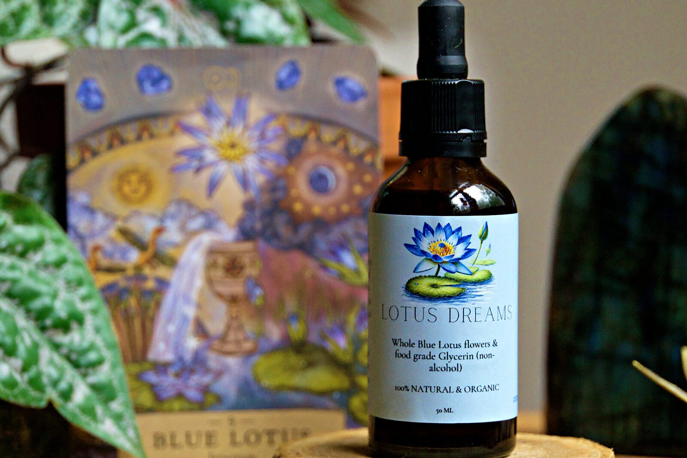
Hele blauwe lotus bloemen, langzaam geëxtraheerd in voedingsgrade glycerine. Voor zacht openende dromen en rust.
Bestellen →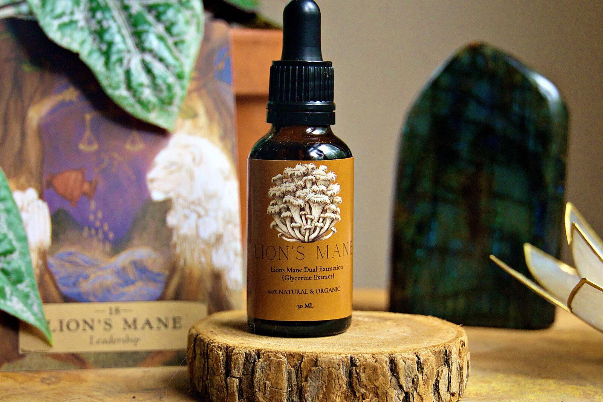
Een glycerine-extract van Lion's Mane paddenstoel, traditioneel gebruikt voor heldere geest, focus en cognitieve ondersteuning.
Bestellen →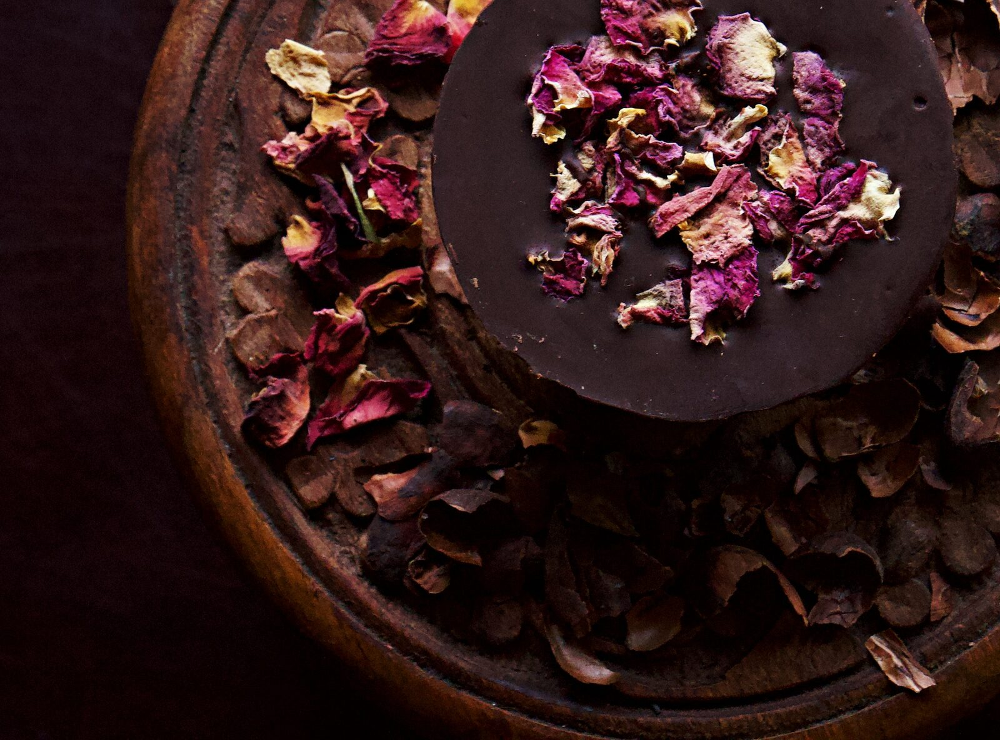
Roos voor het hart — een zachte tinctuur die warmte en compassie nodigt. Voor verbinding met jezelf en wat je liefhebt.
Bestellen →Wij werken met pure ingrediënten en kiezen bewust voor zorgvuldige productie, eerlijke herkomst en aandacht in elk detail. Van boon tot kopje staat kwaliteit centraal.
Respect vormt de basis van alles wat we doen — voor de aarde, de Cacao, de oorsprong van het product en de mensen die ermee verbonden zijn. We geloven in samenwerken vanuit bewustzijn, dankbaarheid en zorg.
Wij geloven in oprechte verbinding — met onszelf, met elkaar en met de mensen die onze Cacao drinken. Daarom bieden we onze producten niet alleen online aan, maar staan we ook op markten en evenementen.
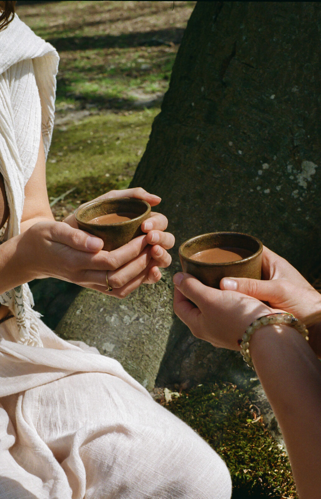
"Let me guide you back to your heart."— Love, Alma
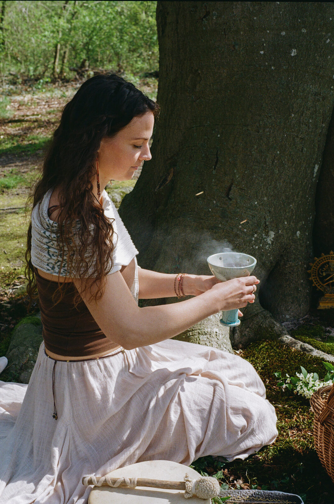
Ceremoniële cacao is iets totaal anders dan de chocolade die je uit de supermarkt kent. Het is 100% pure cacaomassa — alleen de boon, gefermenteerd, geroosterd en zacht gemalen. Geen suiker, geen melk, geen vulstoffen.
Al meer dan 5000 jaar wordt cacao gedronken als heilige plant. De Olmeken, Maya's en Azteken zagen haar als een geschenk van de goden — een plantbondgenoot die het hart opent, focus brengt en je dichter bij jezelf brengt.
Vol magnesium, ijzer, antioxidanten en theobromine — een zachte, langdurige energie zonder cafeïnedip.
Cacao bevat anandamide en PEA — moleculen die geassocieerd worden met geluk, verbinding en liefde.
Geen psychedelicum. Een zachte plantbondgenoot die uitnodigt tot aanwezigheid, focus en zelfreflectie.
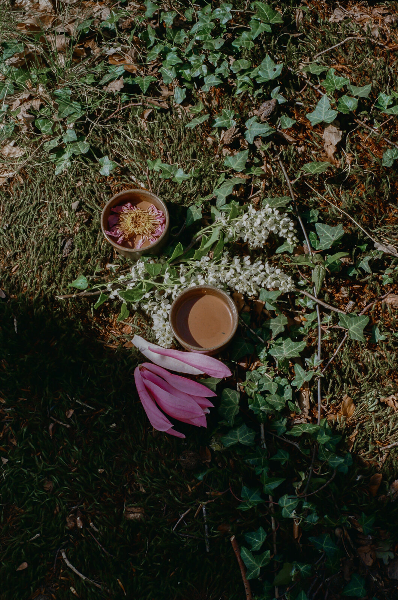
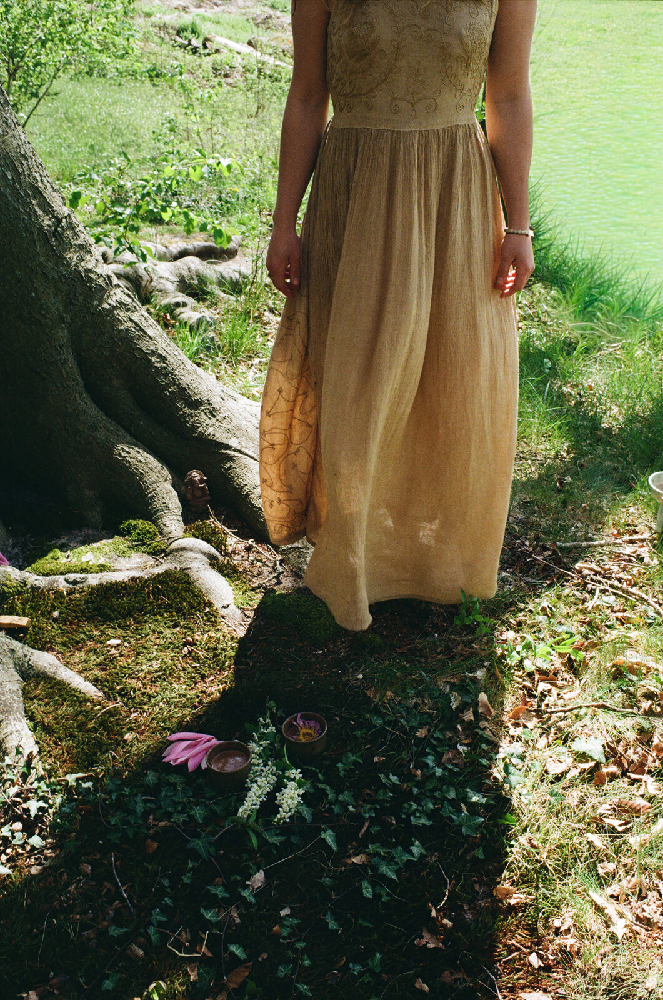
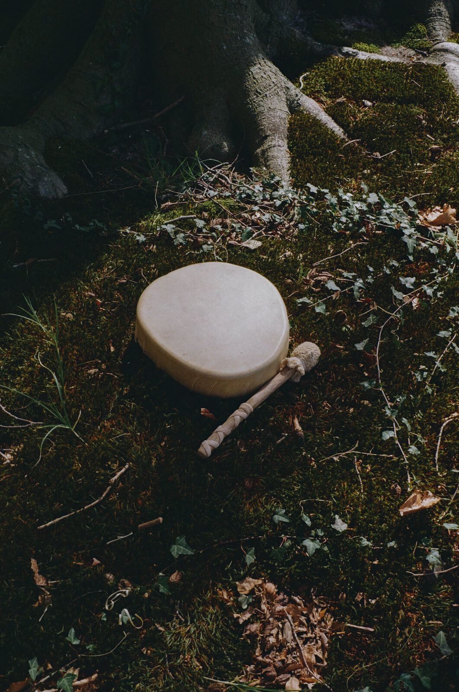
Een eenvoudig ritueel. Vier stappen. Een moment voor jezelf.
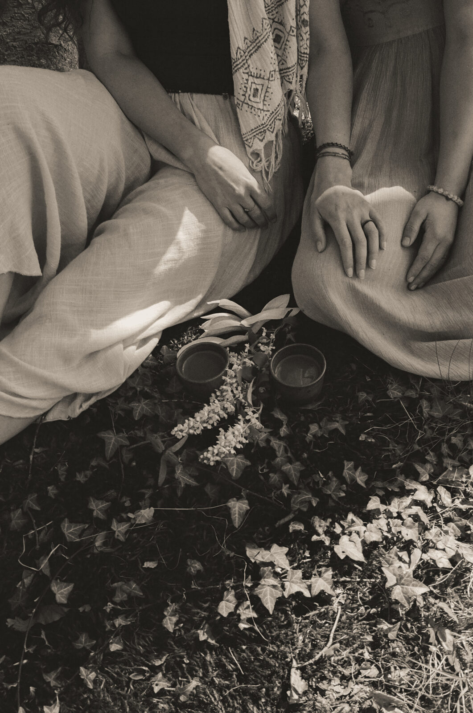
20–30 gram voor een dagelijkse beker. 40–45 gram voor een ceremoniële dosis.
Verwarm 200 ml water of plantaardige melk tot net onder kookpunt. Niet koken.
Voeg cacao toe en roer met een houten lepel of garde. Voeg één van onze blends toe. Optioneel: honing, kaneel of een snufje chili.
Adem in. Zet een intentie. Drink langzaam. Voel hoe de warmte je hart bereikt.
Verdieping, wetenschap en wijsheid rond de plant die we zo liefhebben.

Waarom is ceremoniële cacao zo anders dan de reep uit de supermarkt? Over bereiding, oorsprong en intentie.
Lees verder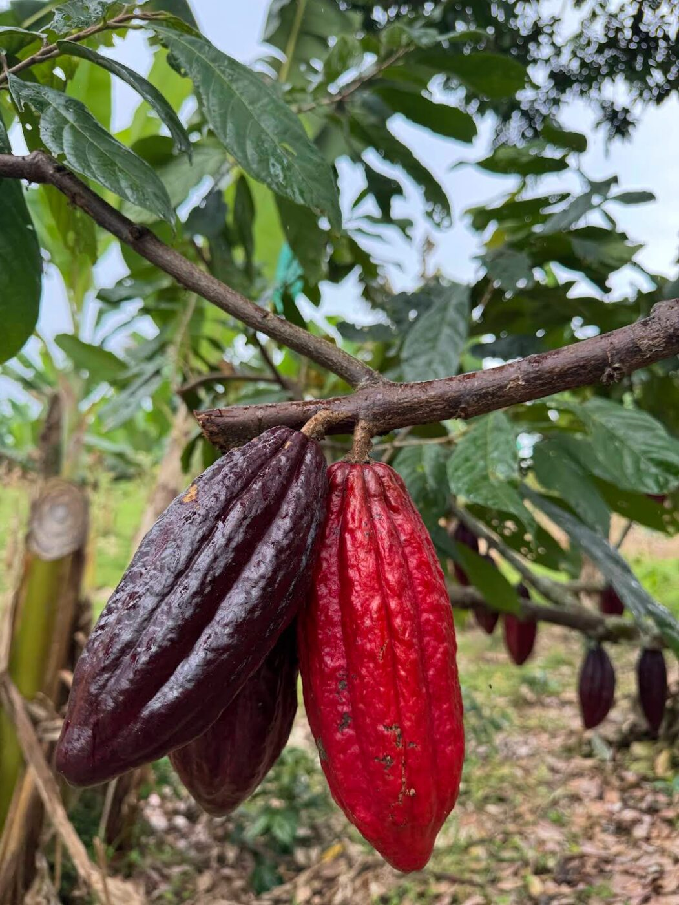
Een reis door de tijd — hoe een onopvallende jungleplant de gewijde drank werd van koningen en sjamanen.
Lees verder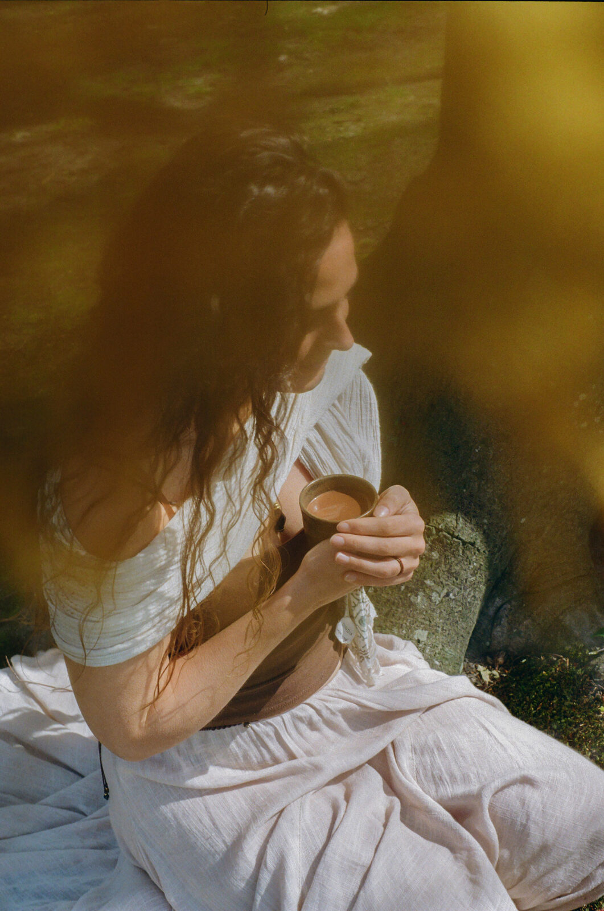
Theobromine, flavanolen, anandamide — de moleculen achter de magie. Wat doet cacao werkelijk in je lichaam?
Lees verder
Met liefde gemaakt, met liefde gedeeld.
— Annelies & Anna